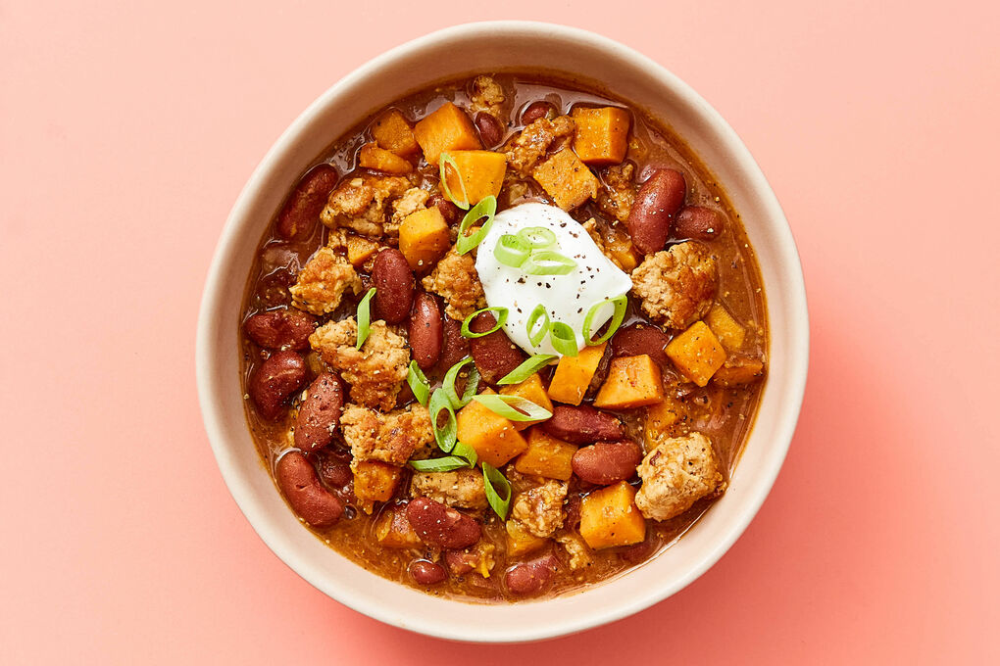

Smokey Chipotle Turkey & Sweet Potato Chili

Description
This hearty bowl of chili has a smokey, spicy flavor that makes you feel good.
Ingredients
- 2 scallions
- 2 sweet potatoes
- 1 oz chipotle chilies in adobo sauce
- 2 (10 oz) pkgs ground turkey
- 2 (¼ oz) taco seasoning
- 2 (15 oz) cans kidney beans
- 4 (1 oz) sour cream
- garlic
- neutral oil
- kosher salt
- ground pepper
- apple cider vinegar (or red wine vinegar)
Steps
-
Prep ingredients
- Trim ends from scallions, then thinly slice, keeping dark greens separate
- Finely chop 1 tbsp garlic
- Scrub sweet potatoes, then cut into ¼ in pieces
-
Brown turkey
- Heat 3 tbsp oil in a large pot over high until shimmering
- Add ground turkey in large clumps and season with salt and pepper
- Cook, without stirring, until well browned on the bottom, 3-5 minutes
- Break up into smaller pieces
-
Cook aromatics
- To pot with turkey, add scallion whites and light greens, chopped garlic, all of the taco seasoning, and chipotle chilies (use half for a milder chili, or omit if no spice is desired)
- Cook, stirring frequently, until fragrant and scallions and garlic are softened, about 1 minute (reduce heat if garlic is browning too quickly)
-
Simmer chili
- To same pot with turkey, add sweet potatoes, all of the beans and their liquid, 2½ cups water, and 1 tbsp salt
- Bring to a simmer over high; partially cover with a lid or foil
- Reduce heat to medium; cook, stirring occasionally, until turkey is cooked through and sweet potatoes are softened, 20-25 min
-
Finish & serve
- Using a slotted spoon, transfer ¼ cup of the chili to a small bowl; roughly mash with a fork
- Stir back into pot with remaining chili to thicken slightly
- Add 2 tbsp vinegar and season to taste with salt and pepper
- Serve turkey and sweet potato chili topped with scallion dark greens and a dollop of sour cream